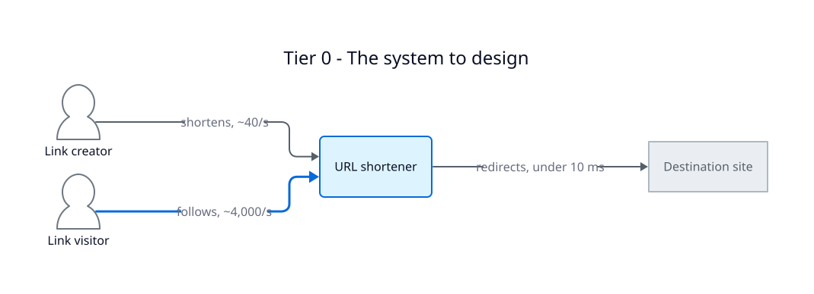
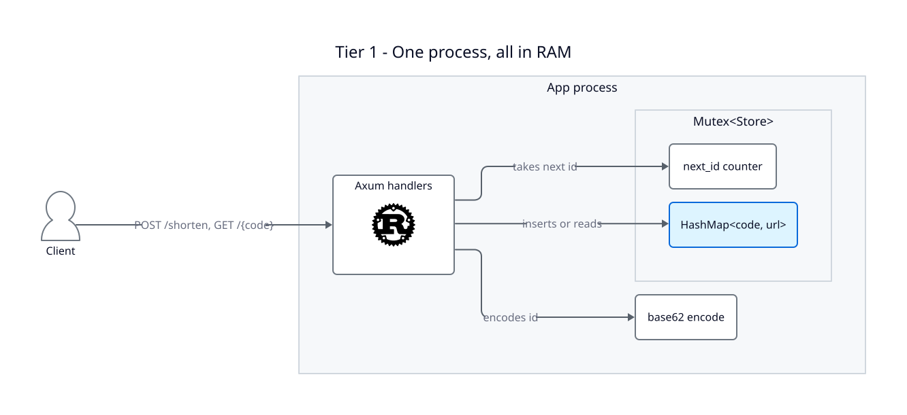
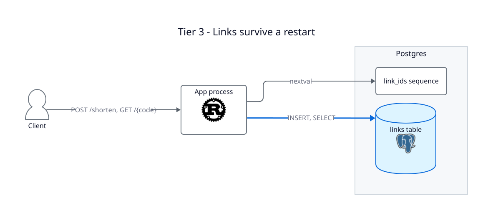
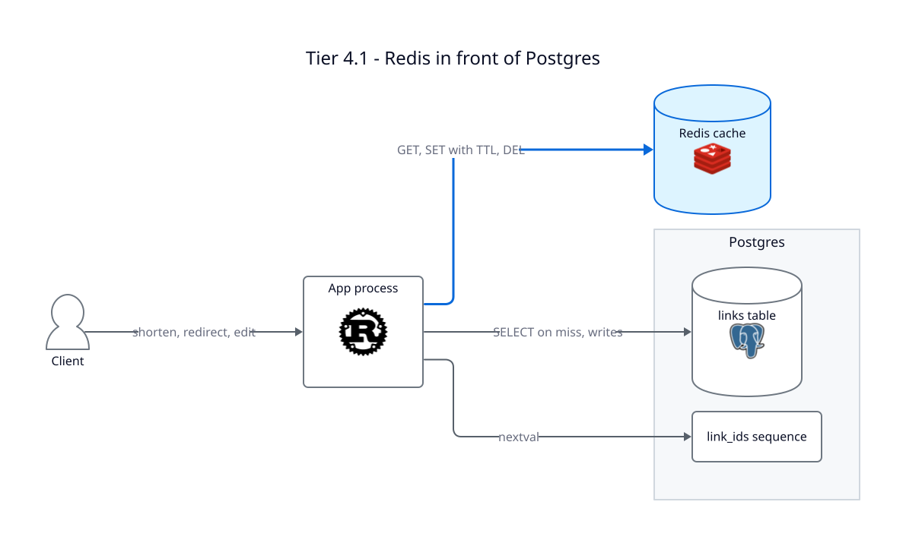
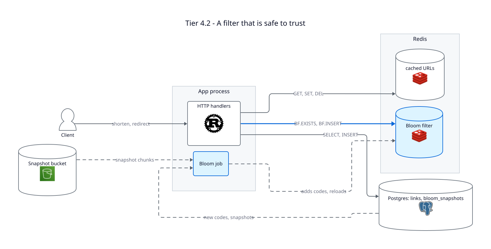
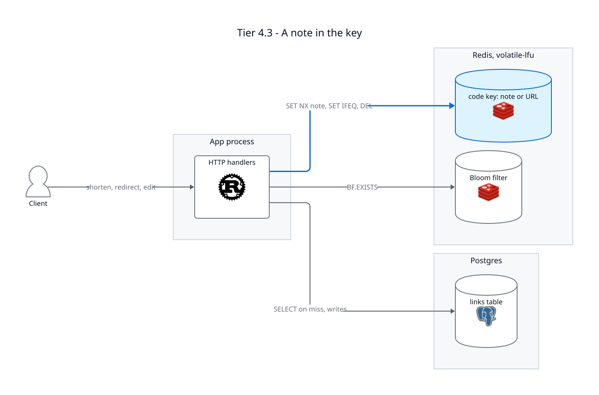
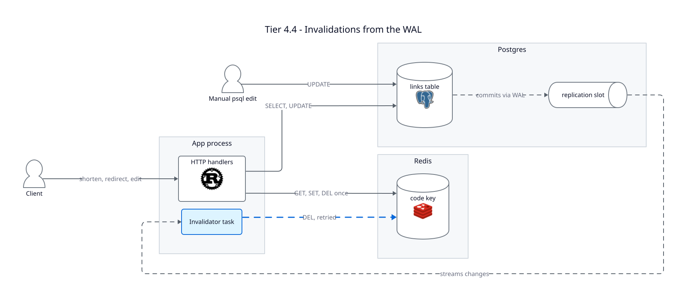
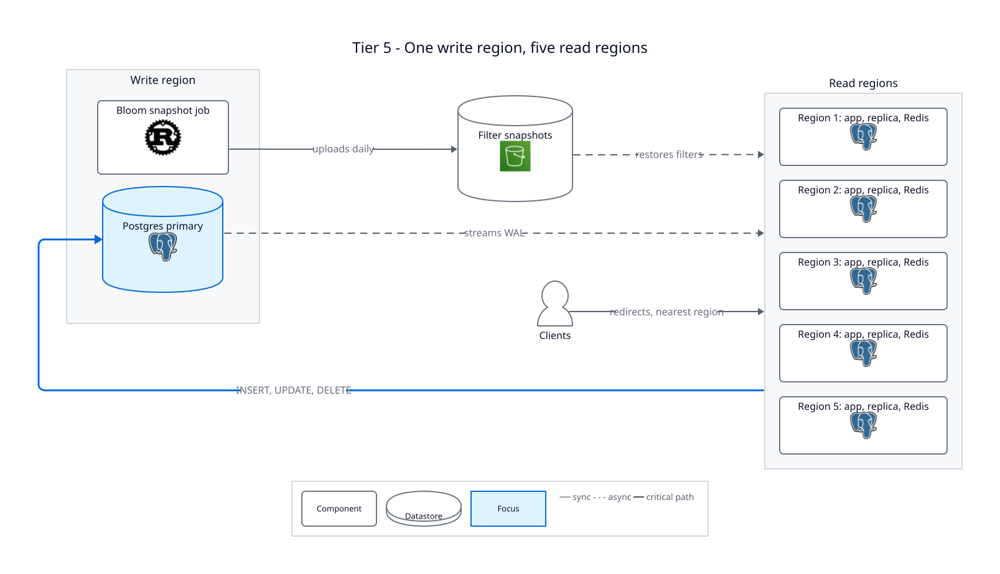
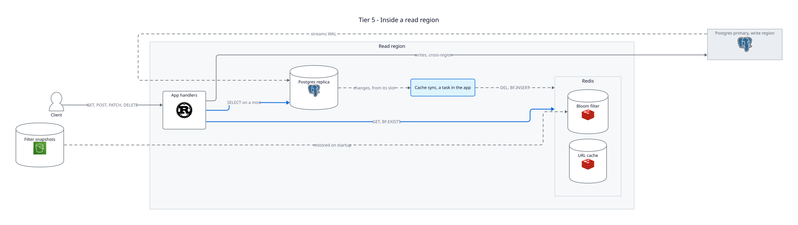
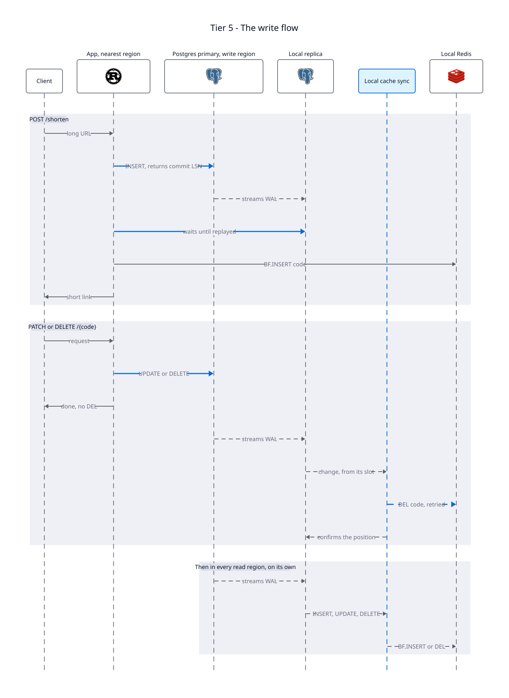

Clase práctica Caches
Sistemas Distribuídos FIUBA
Operaciones del servicio
201 {"code": "1a", "short_url": "…/1a"}
307 Location: https://example.com/a/very/long/path
Los niveles siguientes agregan PATCH y DELETE sobre un código. Poder editar adónde apunta un link es lo que vuelve difícil el caché.

Los números deciden el diseño.
Índice
| Nivel | Agrega | Qué se rompe después |
|---|---|---|
| 1 · Ingenuo | Un HashMap y un contador | Un reinicio pierde todo |
| 2 · Códigos | Contador vs. hash truncado | Los códigos secuenciales se pueden recorrer |
| 3 · Persistencia | Postgres | Cada redirección cuesta una consulta |
| 4.1 · Cache-aside | Redis, un TTL, DEL al escribir | Estampidas, valores viejos, códigos inexistentes |
| 4.2 · Filtro de Bloom | Un filtro con todos los códigos | Las carreras de 4.1 |
| 4.3 · Nota en la clave | Un solo reconstructor por clave | Un DEL perdido |
| 4.4 · WAL | Un segundo DEL desde el log de Postgres | Un solo Postgres, lejos de casi todos |
| 5 · Regiones de lectura | Un escritor, cinco regiones de lectura | Un escritor, demoras cortas |
Un único servidor, ingenuo
Ninguno todavía. Necesitamos un punto de partida para romper.
Un proceso. Un HashMap<code, url> en RAM y un contador u64, ambos detrás de un mutex.

¿Cómo generamos los códigos?
Un código tiene que apuntar a exactamente una URL, para siempre. El Nivel 2 compara los dos caminos.
Por qué contador + base62
base62 es una codificación, no un hash. Solo reescribe el número del contador con 62 símbolos, 0-9 a-z A-Z, para que sea corto y seguro en una URL.
base62::encode(n) | sha256(url)[..7] | |
|---|---|---|
| ¿Reversible? | Sí, un número ↔ un código | No, en un solo sentido |
| ¿Colisiones? | Imposibles | Posibles |
| ¿Depende de la URL? | No, solo del contador | Sí |
| ¿Revela el orden? | Sí: /0, /1, /2 … | No |
7 caracteres cubren 62⁷ ≈ 3,5 × 10¹² links: unos 2.800 años a 40 escrituras/s. La última fila es el costo, y el Nivel 2 se ocupa de eso.
"0"./0, /1, /2 … lista todos los links. Lo ve el Nivel 2.Generación de códigos y colisiones
Contador o hash
| Opción | Pros | Contras |
|---|---|---|
| A · Contador + base62 | Nunca choca: el contador no se repite. Links editables: PATCH conserva el código. |
Recorrible: /0, /1, /2 … Se arregla con una permutación.Contador compartido entre servidores. |
| B · Hash truncado SHA-256, 7 caracteres |
Sin coordinación: cualquier servidor lo calcula. Imposible de adivinar. |
Colisiones: 50% tras ~1,9 M códigos, unas 13 h a 40/s. Editar la URL cambia el código. |
Persistencia
Ctrl-C al servidor y desaparece cada link corto que se haya creado.
Postgres guarda los links. Una secuencia reemplaza al contador, y un pool de conexiones reemplaza al mutex global.
nextval → base62 → INSERTSELECT … WHERE code = $1
Una tabla, una secuencia
CREATE TABLE links (
code TEXT PRIMARY KEY, -- ① el código corto
long_url TEXT NOT NULL,
created_at TIMESTAMPTZ NOT NULL DEFAULT now(),
expires_at TIMESTAMPTZ, -- ② reservada
user_id UUID -- ② reservada
);
-- ③ Reemplaza al contador del Nivel 1.
CREATE SEQUENCE link_ids;El mismo codificador, otra fuente de verdad
pub async fn shorten(&self, url: String) -> sqlx::Result<String> {
// ① Postgres decide "cuál sigue" en lugar de un u64.
let id: i64 = sqlx::query_scalar("SELECT nextval('link_ids')")
.fetch_one(&self.pool).await?;
let code = base62::encode(id as u64);
sqlx::query("INSERT INTO links (code, long_url) VALUES ($1, $2)")
.bind(&code).bind(url)
.execute(&self.pool).await?;
Ok(code)
}
pub async fn resolve(&self, code: &str) -> sqlx::Result<Option<String>> {
// ② Ahora cada redirección es una consulta.
sqlx::query_scalar("SELECT long_url FROM links WHERE code = $1 \
AND (expires_at IS NULL OR expires_at > now())")
.bind(code)
.fetch_optional(&self.pool).await
}Result.Cache-aside con Redis
La app habla con los dos. Redis nunca habla con Postgres.
Este patrón se llama cache-aside, o look-aside.
| Pedido | Qué pasa |
|---|---|
GET /{code} | GET a Redis. Si no está, SELECT a Postgres y luego SET con un TTL de 5 minutos. |
POST /shorten | INSERT en Postgres. El caché se llena en la primera lectura. |
PATCH, DELETE | Escribir en Postgres, luego DEL de la clave en Redis. |
DEL se puede repetir sin riesgo, y la próxima lectura trae el valor actual.
Redis en una diapositiva
La tabla hash del Nivel 1, llevada a la red y compartida por todos los servidores. Guarda los datos en memoria, por eso es rápido, y es un proceso aparte, por eso puede fallar por su cuenta.
El TTL: viejo, pero se arregla solo
Cada valor cacheado vence a los 5 minutos. Pase lo que pase, un valor incorrecto vive como mucho un TTL, y ningún código tiene que detectarlo.
El compromiso: un TTL más corto da menos datos viejos y más consultas a Postgres. AWS presenta lazy loading más un TTL como la combinación estándar, y 5 minutos es el valor de su ejemplo.
ElastiCache caching strategiesUn miss cae en Postgres
pub async fn resolve(&self, code: &str) -> anyhow::Result<Option<String>> {
// ① Un error de Redis cuenta como miss: Postgres igual responde.
let cached = self.redis.clone().get::<_, Option<String>>(code).await
.unwrap_or_else(|e| { log_redis_error(e); None });
if cached.is_some() {
return Ok(cached);
}
let url: Option<String> = sqlx::query_scalar(
"SELECT long_url FROM links WHERE code = $1 AND …")
.bind(code).fetch_optional(&self.pool).await?;
// ② Llenar el caché para el próximo lector. Si falla, no pasa nada.
if let Some(url) = &url
&& let Err(e) = self.redis.clone()
.set_ex::<_, _, ()>(code, url, CACHE_TTL_SECONDS).await
{
log_redis_error(e);
}
Ok(url)
}SELECT y el SET se puede colar una escritura. Ese es el stale set.Las escrituras borran la copia cacheada
pub async fn update(&self, code: &str, url: &str) -> anyhow::Result<bool> {
// ① Primero Postgres: es la verdad.
let result = sqlx::query("UPDATE links SET long_url = $2 WHERE code = $1")
.bind(code).bind(url)
.execute(&self.pool).await?;
self.invalidate(code).await;
Ok(result.rows_affected() > 0)
}
// ② Corre después del commit, así que fallar acá no lo deshace.
async fn invalidate(&self, code: &str) {
if let Err(e) = self.redis.clone().del::<_, ()>(code).await {
log_redis_error(e);
}
}DEL perdido deja la URL vieja hasta un TTL. El Nivel 4.4 lo repara.DELETE FROM links, luego invalidate.GET desde memoria.DEL de una escritura. Un test lo reproduce.Un filtro de Bloom para el caso negativo
Un código que nunca se generó cuesta una consulta completa a Postgres, cada vez.
Un filtro de RedisBloom con todos los códigos, consultado tras un miss, antes de Postgres.
El filtro solo puede decir "no está" si se sabe que está completo. La clave bloom:ready lo registra.
| bloom:ready | BF.EXISTS | resolve hace |
|---|---|---|
| no está | se ignora | Consulta Postgres |
| está | 1 | Consulta Postgres: puede ser un falso positivo |
| está | 0 | 404, sin consulta |

El filtro de Bloom
¿Qué tan largo tiene que ser?
Se eligen dos cosas: cuántos códigos va a guardar (n) y qué porcentaje de falsos positivos se acepta (p). De ahí salen el largo en bits (m) y la cantidad de hashes (k).
m/n = −ln p / (ln 2)². No depende de n.BLOOM_CAPACITY.Fórmulas: Bloom filter, Wikipedia
Un filtro dentro de un caché descartable
Un falso negativo hace que un link real dé 404, lo único que el Nivel 0 prohíbe. Y Redis se puede vaciar en cualquier momento.
bloom:ready, reconstruye el filtro y después lo marca.Los snapshots van a un bucket compatible con S3 porque crecen: unos 1,4 GB para 1.200 millones de códigos. Un advisory lock de Postgres limita el job a una sola instancia.
"Quizás", salvo que el filtro esté seguro
pub async fn might_exist(&self, code: &str) -> anyhow::Result<bool> {
// ① Leer la marca y el filtro en un solo viaje atómico.
let (ready, exists): (bool, bool) = redis::pipe().atomic()
.exists(READY_KEY)
.cmd("BF.EXISTS").arg(FILTER_KEY).arg(code)
.query_async(&mut self.redis.clone()).await?;
// ② Solo un filtro completo puede decir "no está".
Ok(!ready || exists)
}
// En resolve, después de un miss:
match self.bloom.might_exist(code).await {
Ok(false) => return Ok(None), // ③ un 404 sin consulta
Ok(true) => {}
Err(e) => log_redis_error(e), // ④ un error significa "quizás"
}
// …y luego SELECT a Postgres, como en 4.1.Un job mantiene el filtro completo
async fn job(&self) -> anyhow::Result<()> {
// ① Una instancia a la vez. El lock termina con la transacción.
let mut lock = self.pool.begin().await?;
let acquired: bool = sqlx::query_scalar("SELECT pg_try_advisory_xact_lock($1)")
.bind(JOB_LOCK).fetch_one(&mut *lock).await?;
if !acquired { return Ok(()); }
// ② No hay marca: Redis se vació o es nuevo. Reconstruir.
let ready: bool = redis::cmd("EXISTS").arg(READY_KEY)
.query_async(&mut self.redis.clone()).await?;
if !ready { return self.recover().await; }
// ③ Volver a agregar los últimos 5 minutos, por si Redis perdió alguno.
self.add_recent().await?;
// ④ Una vez por día, guardar un snapshot en el bucket.
if self.snapshot_due().await? { self.save_snapshot().await?; }
Ok(())
}Una nota en la clave
Estampida: vence una clave popular y todos los pedidos consultan Postgres. Stale set: una lectura lenta cachea una URL vieja después del DEL de una escritura.
La nota es "\0" + hex aleatorio, guardada bajo el mismo código. Ninguna URL empieza con un byte NUL.
| Situación | Comandos de Redis |
|---|---|
| Hit | GET |
| Primer lector | SET code note NX PX 2000 → SELECT → SET code url IFEQ note |
| Los demás | GET cada 50 ms; a los 200 ms, SELECT sin cachear |
| Sin fila | DELEX code IFEQ note |
| Escrituras | UPDATE, luego DEL code. Nunca esperan. |

Formas de domar una estampida
| Patrón | Cómo | ¿Stale set? | Costo |
|---|---|---|---|
| Clave de lock aparte | SET lock:{code} NX PX, luego reconstruir | No | Un DEL del valor no frena la reconstrucción. Dos claves que se pueden desfasar, y en un clúster necesitan un hash tag. |
| Scripts de Lua | Verificar y actuar, atómico en el servidor | Sí | Lo estándar antes de Redis 8.4. Un script que cargar y mantener. |
| Singleflight | Unir misses en un proceso | No | No ayuda entre servidores. |
| Refresco anticipado (XFetch) | Refrescar antes de vencer, con probabilidad creciente | No | Solo claves populares. Sin lock. |
| Nota en la clave | SET NX, luego SET IFEQ | Sí | Redis 8.4, y cada lector revisa el prefijo. |
Tres comandos reemplazan los scripts de Lua
MULTI/EXEC solo encola comandos; no puede decidir según un valor. Por eso verificar-y-actuar necesitaba Lua. Ahora cada uno es un solo comando atómico.
DEL borró la nota. Reemplaza el script de compare-and-set.IdentityCache, de Shopify
Una librería de Ruby de Shopify, sobre memcached en lugar de Redis. Es lo más parecido a este nivel en producción.
[FILL_LOCKED, client_id, version] escrito en la clave cacheada, y verificado con CAS.DELETED de vida corta en lugar de borrar la clave. Un llenado que lo encuentra se rinde.También: rueidisaside, una librería de Go de Redis, guarda un marcador en la clave, pero con scripts de Lua escritos antes de IFEQ. Los leases de memcache de Facebook lo hacen con un token del servidor.
Jitter del TTL y desalojo
Cada TTL es de 300 s más 0 a 10 segundos aleatorios. Las claves cacheadas juntas, por ejemplo justo después de un reinicio, no vencen todas en el mismo segundo.
maxmemory | 8mb, chico a propósito, para ver el desalojo |
maxmemory-policy | volatile-lfu |
Desaloja solo claves con TTL, las menos usadas primero. Las URLs y las notas tienen uno. El filtro y bloom:ready no, así que nunca se desalojan.
Esperar una nota, o dejar una
loop {
match self.redis.clone().get::<_, Option<String>>(code).await? {
// ① Alguien está reconstruyendo: esperar, hasta 200 ms.
Some(note) if note.starts_with(NOTE_PREFIX) => {
if Instant::now() >= deadline { return self.read_postgres(code).await; }
tokio::time::sleep(WAIT_STEP).await;
continue;
}
Some(url) => return Ok(Some(url)),
None => {}
}
// (Acá va el chequeo del filtro de Bloom de 4.2.)
// ② Intentar ser el reconstructor.
let note = new_note();
let won: Option<String> = redis::cmd("SET").arg(code).arg(¬e)
.arg("NX").arg("PX").arg(NOTE_TTL_MS)
.query_async(&mut self.redis.clone()).await?;
match won {
Some(_) => return self.rebuild(code, ¬e).await,
None => continue, // ③ otro lector llegó primero
}
}Escribir solo si la nota sobrevivió
async fn rebuild(&self, code: &str, note: &str) -> anyhow::Result<Option<String>> {
let url = self.read_postgres(code).await;
let cmd = match &url {
// ① Solo se escribe si nuestra nota sigue ahí.
Ok(Some(url)) => redis::cmd("SET").arg(code).arg(url)
.arg("IFEQ").arg(note)
.arg("EX").arg(jittered_ttl()).clone(),
// ② No hay fila, o Postgres falló: liberar la clave ya.
_ => redis::cmd("DELEX").arg(code)
.arg("IFEQ").arg(note).clone(),
};
if let Err(e) = cmd.query_async::<()>(&mut self.redis.clone()).await {
log_redis_error(e);
}
url
}DEL llegó entre nuestro SELECT y este SET, borró la nota, y la URL vieja se rechaza.DEL común podría borrar la nota de otro lector, o una URL nueva.300 + rand(0..=10) segundos.La misma estampida, dos veces
Tres ráfagas de 50 pedidos concurrentes sobre una clave fría, con 150 ms extra en cada consulta a Postgres para que los misses se superpongan. Prometheus y Grafana miran las dos apps.
Para correrla en vivo: docker compose up -d en thundering-herd-demo/, levantar los dos niveles con DEMO_QUERY_DELAY_MS=150, y después ./load-test.sh.
DEL fallan, y los valores viejos pueden volver con Redis.Invalidaciones desde el WAL
El handler hace commit y su DEL falla. Las ediciones hechas en psql nunca se invalidan.
Postgres ya registra cada cambio confirmado. El invalidador lee ese log y borra cada código cambiado, reintentando hasta que Redis acepta.
| Quién | Cuándo | Si falla |
|---|---|---|
| Handler | Justo después del commit | Lo registra y sigue |
| Invalidador | Al leer el commit, ms después | Reintenta cada segundo |
DEL es idempotente: una o diez veces, la clave termina sin existir.

¿Qué es un slot de replicación?
No es una copia del WAL. Es un marcador sobre el único WAL que Postgres ya guarda, y una promesa de no borrar lo que viene después.
update_applied_lsn.max_slot_wal_keep_size.De bytes del WAL a cambios de filas
links_pub elige las tablas a transmitir.cache_invalidator recuerda hasta dónde confirmamos.pgoutput.Solo una conexión puede usar un slot, así que con varias instancias de la app las demás reintentan cada segundo. El slot funciona también como lock. El crate pgwire-replication habla el protocolo.
Confirmar solo después de que Redis acepte
let mut codes = Vec::new();
while let Some(event) = changes.recv().await? {
match event {
// Transacción nueva: olvidar los códigos de la anterior.
ReplicationEvent::Begin { .. } => codes.clear(),
// Una fila cambiada: guardar su código (UPDATE, DELETE).
ReplicationEvent::XLogData { data, .. } =>
codes.extend(changed_code(&data)),
ReplicationEvent::Commit { end_lsn, .. } => {
// ① Reintenta hasta que Redis acepta.
self.delete_until_accepted(&codes).await;
// ② Recién ahora Postgres puede descartar este WAL.
changes.update_applied_lsn(end_lsn);
}
_ => {}
}
}DEL del handler deja el mismo estado: la clave no existe.DEL se pierde para siempre.DEL está bien.Leer un mensaje de pgoutput
fn changed_code(message: &[u8]) -> Option<String> {
// ① Solo 'U' y 'D'. Los inserts se saltean.
if !matches!(message.first(), Some(b'U' | b'D')) {
return None;
}
// ② Saltear el id de tabla de 4 bytes y la marca de tupla.
let tuple = message.get(6..)?;
// ③ 't' marca una columna de texto: largo de 4 bytes y los bytes.
if tuple.get(2) != Some(&b't') {
return None;
}
let len = u32::from_be_bytes(tuple.get(3..7)?.try_into().ok()?) as usize;
String::from_utf8(tuple.get(7..7 + len)?.to_vec()).ok()
}DEL.K u O es la clave vieja, N la fila nueva. Las dos empiezan con code.code es la primera columna. Hay que leer el mensaje Relation cuando se publiquen más tablas.Las dos carreras del paper de Facebook
Las dos terminan igual: se escribe un valor viejo después de la invalidación que debía sacarlo.
| Carrera | Qué pasa | Estado |
|---|---|---|
| Carrera 2 · stale set | Una lectura lenta cachea la URL vieja después del DEL de una escritura, dentro de una región. | Cerrada en 4.3 |
| Invalidación perdida | El DEL nunca llega. | Cerrada en 4.4 |
| Carrera 1 · entre regiones | El DEL llega antes de que una réplica atrasada tenga el valor nuevo, y un lector cachea el viejo. | Necesita réplicas: Nivel 5 |
UPDATE en psql también llega a Redis.DEL del handler sigue llegando primero.DEL del handler lo tapa hasta un corte. Hay que alertar sobre el retraso del slot.DEL puede borrar un valor ya reconstruido.Regiones de lectura
Cómo corre OpenAI el Postgres de ChatGPT
Uno de los Postgres con más carga del mundo no usa sharding: un solo escritor, copiado a todas partes.
Un cliente lejano paga un viaje largo en cada redirección. Si Redis falla, el único Postgres recibe toda la carga de lecturas.
Mantener un solo escritor y copiarlo a todas partes. Postgres replica los datos solo; nuestro código solo mantiene el Redis de cada región al día con su propia réplica.



Una escritura sale, y vuelve
POST, PATCH o DELETE, a la app más cercana.DEL para una edición o un borrado, BF.INSERT para un código nuevo. Reintenta hasta que Redis acepta.Dos tipos de replicación, los dos desde el WAL
links a cada región. Sin código nuestro.wal_level=logical en el primario y hot_standby_feedback=on en la réplica.Sin hot_standby_feedback, el primario puede limpiar filas que el slot todavía necesita, y Postgres invalida el slot.
¿Por qué leer la réplica local y no el primario?
Un cambio llega a cache sync solo después de que la réplica de la región lo reprodujo. Así cada DEL llega cuando el valor nuevo ya se puede leer ahí.
DEL llega mientras la réplica todavía tiene la URL vieja. Un lector no la encuentra, consulta la réplica y vuelve a cachear la URL vieja. La nota de 4.3 no ayuda: la réplica misma está atrasada.DEL no puede adelantarse a los datos. Un lector que vuelve a llenar el caché obtiene la URL nueva. mcsqueal de Facebook lee el log local de cada región por la misma razón.| Cambio | Cache sync hace |
|---|---|
INSERT | BF.INSERT code en el filtro de la región |
UPDATE, DELETE | DEL code, reintentado hasta que Redis acepta |
Esperar a la réplica
Un LSN es una posición en el WAL, como un offset en bytes. Comparar dos dice si una réplica ya se puso al día.
INSERT, luego pg_current_wal_lsn(): la posición a alcanzar.pg_last_wal_replay_lsn() cada pocos ms hasta alcanzarla, con un timeout.BF.INSERT local, y devolver el link. Funciona al instante en esta región.Un filtro en cada región, nunca adelantado al primario
Agregar solo prende bits, y nada los apaga. El handler agrega un código recién después de que volvió su commit, así que un BF.INSERT duplicado no cambia nada.
created_at, como en 4.2.INSERT nuevo, a medida que se reproduce.Orden: una región nueva crea su slot antes del paso 2. Si no, un código insertado entre el recorrido y el slot nunca llega a su filtro. Que se superpongan no hace daño.
Lecturas más rápidas, escrituras más lentas
| Pedido | Nivel 4.4 | Nivel 5 |
|---|---|---|
| Redirección | Un viaje a la única región | Se sirve en la región más cercana |
| Redirección justo después de editar | URL nueva | URL vieja durante el retraso de la réplica más el de cache sync |
| Redirección justo después de crear | Funciona | Funciona en la misma región; 404 por un momento en las otras |
POST /shorten | Un viaje | Entre regiones, más la espera a la réplica local |
PATCH, DELETE | Un viaje | Entre regiones |
DEL no puede adelantarse a los datos.POST /shorten espera a una réplica, con la pregunta del timeout abierta.De un HashMap a seis regiones
| Nivel | La idea | Arregló |
|---|---|---|
| 1 | Contador + base62 en un HashMap | Un punto de partida que funciona |
| 2 | Contador vs. hash | Códigos que nunca chocan |
| 3 | Postgres | Los reinicios |
| 4.1 | Cache-aside, TTL, DEL | Una consulta por redirección |
| 4.2 | Filtro de Bloom | Consultas por códigos inexistentes |
| 4.3 | Una nota en la clave | Estampidas y stale sets |
| 4.4 | Invalidaciones desde el WAL | Los DEL perdidos |
| 5 | Regiones de lectura | La distancia, y la Carrera 1 |
Todavía abierto
expires_at hasta un TTL.Preguntas para discutir
¿Por qué 307 y no 301? ¿Qué rompería una redirección permanente?
El nextval() de Postgres nunca devuelve un valor de una transacción revertida. ¿Por qué es el compromiso correcto?
¿Por qué el compare-and-delete de 4.3 tiene que ser un solo comando, y no un GET seguido de un DEL?
Corran cache sync desde el slot del primario. Sigan una lectura que cachea la URL vieja.
github.com/JM-Pascual/Systems-Design-URL-Shortener